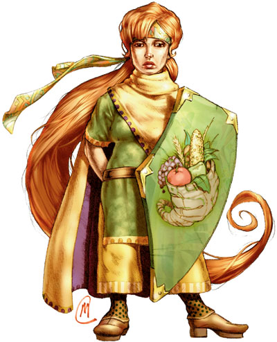

悠达拉（Yondalla）

保护者，供给者，哺育众生之女神，受膏者
伟大神力
圣徽：羊角徽盾

居住位面：Celestia
阵营：守序中立
神职：半身人，保护，丰饶
信徒：半身人，探险家，先驱者
牧师阵营：守序善良，中立善良，守序中立
领域：善良，秩序，保护
偏好武器：短剑
半神人女神悠达拉往往以一位身材健美且自信满满地女性半身人的形象出现。她身着绿，黄和棕色相间的外袍，并总是带着一面盾牌。悠达拉是半身人一族的创造者和保护神。
教义
悠达拉永远努力维持着半身人一族内部的和谐融洽，并支持族人坚定决心防御任何外敌。她鼓励他的人民去与别的种族合作，但要保留下半身人一族的古老传统。所谓半身人一族的古老传统，是指一个地域内的半身人一族总是保持团结，圈地并建立起只有半身人才允许进入的领土，就算是他们移居住到别的种族为主流的地域里也是一样。实际上，大多数的半身人都尊奉悠达拉的旨意，坚持着这一传统。悠达拉也教导半身人们，机遇是要自己去把握的，这个信条让许多半身人的适应力变得很强，同时也让他们身上带上了机遇主义的色彩。悠达拉绝不能容忍任何邪恶存在于半身人族群中间，但她并不严酷地对待他们。相较于残酷的清晰，她更喜欢引领着这些“迷路的孩子”走回他们的家，走回他们朋友中间。
神职人员与牧师
悠达拉的牧师对涉及到半身人生活的任何事物都非常的关心，并会努力去研究，但除了偷窃（牧师们说，半身人族群中的偷窃行为就算是按悠达拉女神关于“把握机遇”的信条来解释，也太过分了）。悠达拉的牧师会在婚礼与葬礼，军队出征的仪祭，新冒险活动的饯行会，以及半身人族群的战事防御上起到关键的作用。
侍奉悠达拉的神殿一般都是选地址在优美宽货的花园或是农田中央。它们一般都内置一个充满了食物和其他生活必需品的巨大储藏室，还内置了武器库，建筑也为防御目的而加固过。这样，当必要的时候，这里可以成为周围地区半身人躲避自然灾害与敌人攻击的避难所。
悠达拉
术士12级/圣武士13级/牧师15级
小体型外界生物（善良，秩序）
神格等级：18
生命骰：20d8+200（外界生物）加12d4+120（术士）加13d10+130（圣武士）加15d8+150（牧师）（1058hp）
先攻调整值：+17，总是最先行动（+13敏捷，+4精通先攻，绝对先攻）
防御等级：91（+1体型，+13敏捷，+18神格等级，+31天生防御，+6盔甲[+5活化辟矢镜映小圆盾]，+12偏转）
攻击加值：+5秩序护身加速短剑 +75/+75/+70/+65/+60近战；或者法术 +65近战接触或 +72远程接触。攻击检定自然掷骰结果总为20，掷骰结果按重击计算。
伤害加值：+5秩序护身加速短剑 1d6+11/17-20；或者使用法术。总是取最大伤害值（短剑造成17点伤害）
占据/威胁范围：5尺*5尺/5尺
特殊攻击：破邪斩（在一次攻击中，命中+12，伤害+13），每日19次驱散不死生物，领域神力，超凡神格能力，类法术能力
特性：神格免疫，伤害减免 53/+4，火元素伤害抗力38，快速医疗 38，神术自发性施法，理解、交谈及阅读所有语言并直接于任何15里内的生命存在交谈，远程沟通，神祗国度，随意无误传送，随意位面旅行，魔宠（熊），勇气圣光，侦测邪恶，神恩，神佑，圣疗，SR70，神力光环（18里，DC35）
豁免调整值：坚韧 +60，反射 +65，意志 +65，豁免检定掷骰自然结果总是取20
能力值：力量 22，敏捷 37，体质 30，智力 25，感知 40，魅力 34
技能调整值：炼金术 +40，理解动物 +53，估价 +48，唬骗 +53，攀爬 +26，专注 +71，手艺（皮革加工） +88，手艺（金属加工） +88，手艺（木工） +88，交涉 +68，驯养动物 +46，医疗 +49，躲藏 +33，威吓 +32，跳跃 +26，知识（奥术） +72，知识（自然） +48，聆听 +60，潜行 +34，专业（农夫） +96，骑术（马） +33，探知 +51，搜索 +48，察言观色 +56，辨识法术 +51，侦察 +58，技能检定掷骰自然结果总是取20
专长：警觉，格斗反射，神圣复仇，闪避，寓守于攻，额外驱散，高级法术渗透，精通重击（短剑），精通卸除武器，精通先攻，精通绊摔，闪电反射，机动，神圣法术，法术渗透，跳跃攻击，高级寓守于攻，追踪，武器专攻（短剑），旋风攻击
神格免疫：属性伤害，属性吸取，酸，冷，即死效果，疾病，瓦解，电，能量吸取，心智影响效果，麻痹，毒，睡眠，震慑，变形，监禁，放逐。
超凡神格能力：改变形态，改变现实，改变大小，区域神力护盾，化身，战斗第六感，命令植物，操控生物（半身人），创造高级物品，创造物品，神力冲击波，神力创造，神力闪避，神力快速医疗，神力护盾，神力武器专攻（短剑），生命礼物，无视奥术失效+，增强法术抗力，集体神力冲击波，生物交谈（动物），生物交谈（植物），绝对先攻。带“+”为独特超凡神圣能力，后文见说明
领域神力：施展善良领域法术时，施法者等级加1；施展秩序领域法术时，施法者等级加1；每日18次保护结界（结界内生物在下次豁免检定中获得+15的抗力加值，最长持续1小时）
类法术能力：悠达拉可以相当于施法者等级为29级使用善良领域和秩序领域类法术能力，以相当于施法者等级为28使用其他类法术能力。类法术能力的基本豁免DC为35+法术等级。Aid,antimagic field,blade barrier,calm emotions,dicturn,dispel chaos,dispel evil,hold monster,holy aura,holy smite,holy word,magic circle against chaos,magic circle against evil,mind bland,order's wrath,prismatic sphere,protection form chaos,protection from elements,protection from evil,repulsion,sanctuary,shield of law,shield other,spell immunity,spell resistance,summon monster IX（仅限以秩序领域法术施展）
牧师每日神术：6/10/10/10/8/8/7/6/4；基础DC=25+法术等级
术士可知法术（6/9/9/9/9/7/5；基础DC=22+法术等级）：0-arcane mark,detect magic,detect poison,ghost sound,light,mage hand,mending,prestidigitation,read magic;1st-alarm,detect secret doors,expeditious retreat,grease,obscuring mist;2nd-arcane lock,detect thoughts,glitterdust,see invisibility,summon swarm;3rd-displacement,fly,halt undead,sleet storm;4th-confusion,Otiluke's resilient sphere,solid fog;5th-animal growth,Bigby's interposing hand;6th-Bigby's forceful hand.
无视奥术失效（独特超凡神格能力）：悠达拉忽视由于携带并装备盾牌或小圆盾而造成的奥术失效几率。
财产：悠达拉拥有一把名为“号角之刃”的 +5秩序护身加速短剑。此剑制造施法者等级为25，重3磅。
其他神格能力
作为一个强大神力，悠达拉在任何掷骰中（包括攻击骰，伤害骰，豁免）自动取最高值，他是不朽的。
感知：悠达拉可以看见，听见，触摸和嗅到18里的距离。她的神力感知视觉可以在日光，微光，月光或者星光下看到同样的距离，但不能看破完全的黑暗。作为一个标准动作，她能够感知到任何动物，她的信徒，圣迹，与她有关的物体和任何她的名字在一个小时内被说出的地点周围18里内的一切。她能够立即将他的感知延伸到20个地方。她立即能够在2个地方阻止神格等级等于或者小于她的神的感知力量，时间最长可达18个小时。
神职感知：悠达拉可以感知到尘世间十八周前或十八周后所发生的任何有关半身人一族的安宁与幸福的事件。她也可以感知到任何半身人的出生。
自动动作：悠达拉能够以一个自由动作使用其手艺（皮革加工），手艺（金属加工），手艺（木工），知识（奥术），以及知识（自然）等技能，只要该项任务的DC在30或者更低。她每轮能够完成20个类似的自由动作。
创造魔法物品：悠达拉能够创造出任何魔法盔甲和保护性物品，比如bracers of armor,ring of protection,loak of resistance。
化身
悠达拉派遣她的化身去巡游半身人的领地，以防任何不测发生，同时也会派他们在农业技术上帮助半身人及其他种族。
悠达拉的化身：如同悠达拉的本体，但以下除外：神格等级为9，防御等级73（接触45，措手不及60）；攻击加值 +66/+66/+61/+56/+51近战（164+11/17-20，+5秩序护身加速短剑）或法术 +55近战接触或 +62远程接触；特性 伤害减免 44/+4，火元素伤害抗力 29，SR61，神力光环（900尺，DC26）；豁免调整值 坚韧 +51，反射 +56，意志 +56；所有技能调整值减9
超凡神格能力：改变大小，区域神力护盾，神力闪避，神力快速医疗，神力护盾，神力武器专攻（短剑），生命礼物，增强法术抗力，生物交谈（动物），生物交谈（植物），绝对先攻。
类法术能力：施法者等级为19，豁免检定DC为26+法术等级